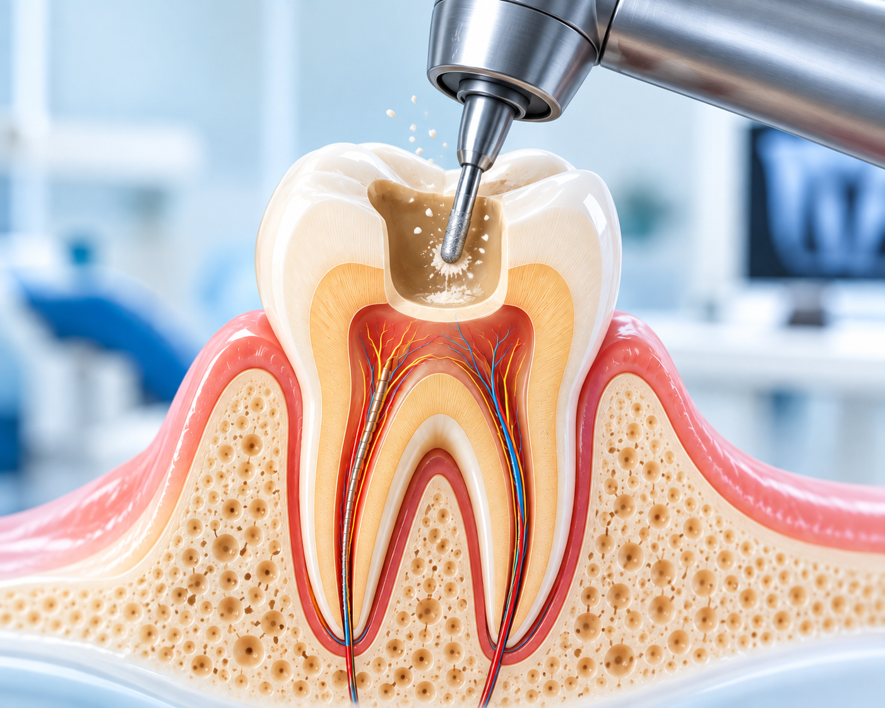
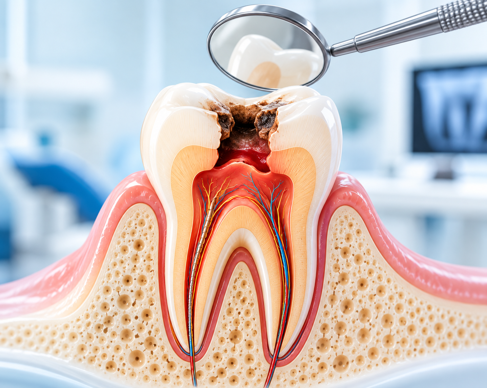
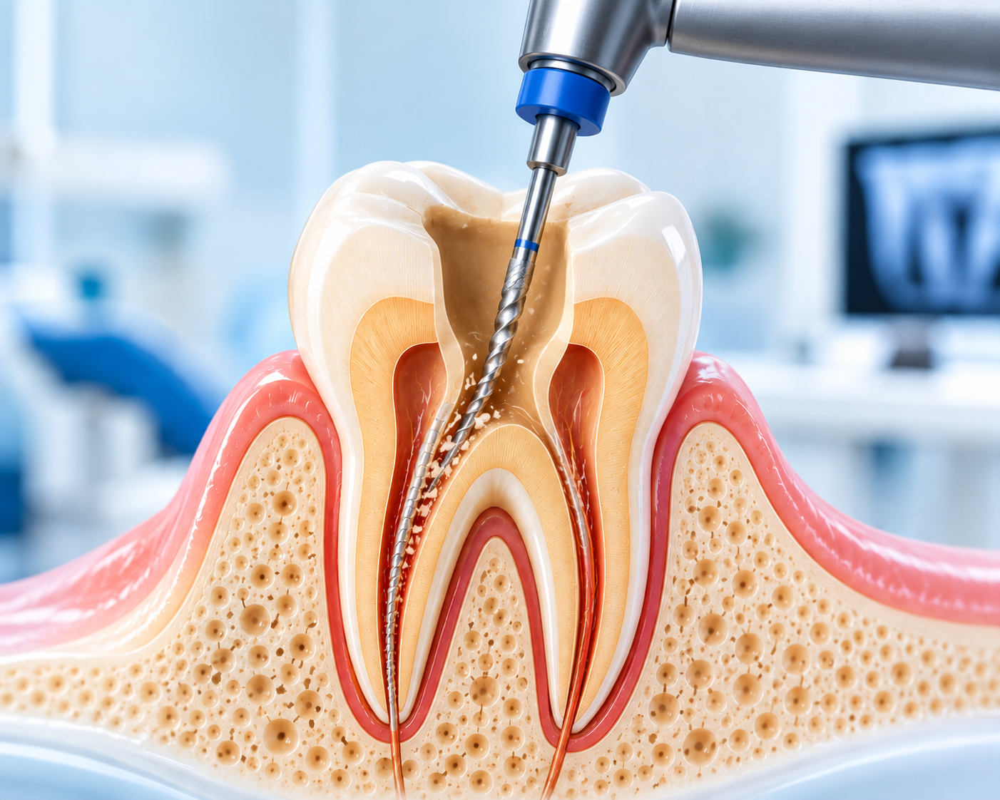
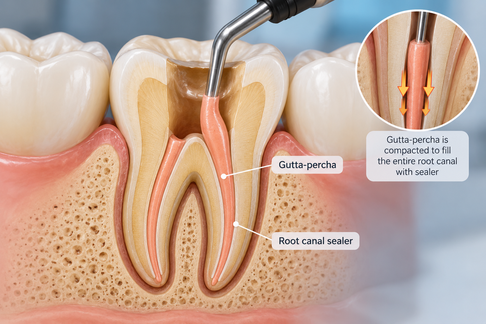
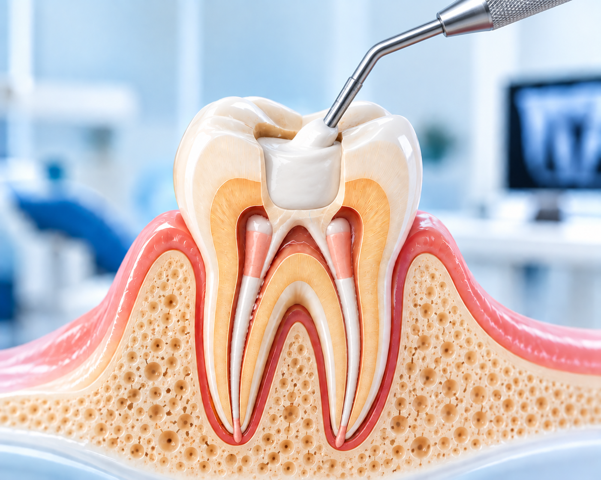

01

Removal of damaged pulp
We carefully remove the damaged or infected pulp from inside the tooth before cleaning, shaping and preparing it for a proper root canal treatment.
Root canal treatment helps remove infection from inside a tooth, relieve pain and preserve your natural smile. Our approach focuses on careful diagnosis, precise treatment and long-term tooth health.
Read About RCT →

Root canal treatment is a procedure used to treat infection or inflammation inside a tooth. The infected or damaged pulp is carefully removed, the internal space is cleaned and disinfected, and the tooth is sealed to help prevent further infection.
The aim is to preserve your natural tooth and restore its function instead of removing it whenever the tooth can be successfully saved.
Root canal treatment may be recommended when the pulp inside a tooth becomes inflamed, infected or irreversibly damaged.
A thorough examination and appropriate diagnostic tests help us understand the condition of the tooth and select the right treatment.
Persistent or spontaneous tooth pain
Prolonged sensitivity to hot or cold
Pain while chewing or biting
Swelling or tenderness near the tooth
Deep decay or damage to the tooth
Each case is assessed individually. The treatment process may vary depending on the condition of the tooth, the extent of infection and the restoration required afterward.

We carefully remove the damaged or infected pulp from inside the tooth before cleaning, shaping and preparing it for a proper root canal treatment.

The damaged pulp is removed and the internal canal system is carefully cleaned and disinfected.

The cleaned canal space is filled and sealed to help reduce the possibility of reinfection.

The tooth is restored according to its condition and functional requirements to help protect it for the future.
UNDERSTANDING ROOT CANAL TREATMENT
Root canal treatment is intended to address infection or inflammation involving the dental pulp and help preserve the natural tooth. These case examples explain the assessment, treatment and restoration process.
Successful treatment begins with careful planning and attention to detail. We focus on preserving healthy tooth structure and providing treatment based on your individual needs.
Understanding the source of pain and the condition of the tooth before recommending treatment.
Using magnification and attention to detail to support precise clinical treatment.
Using appropriate isolation methods, including rubber dam isolation whenever indicated.
Focusing on preserving your natural tooth whenever a predictable and suitable outcome is possible.
Your tooth may require a suitable permanent restoration depending on its remaining structure and functional demands. Follow the instructions provided after treatment and contact the clinic if you experience unexpected or persistent symptoms.
PRESERVE YOUR NATURAL SMILE
Schedule an examination so we can understand your concern and discuss suitable treatment options.